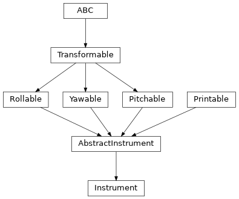

Instrument#
- class esis.optics.Instrument(name='ESIS', axis_channel='channel', front_aperture=None, central_obscuration=None, primary_mirror=None, field_stop=None, grating=None, filter=None, camera=None, wavelength=None, field=None, pupil=None, pitch=<Quantity 0. deg>, yaw=<Quantity 0. deg>, roll=<Quantity 0. deg>, kwargs_plot=None)[source]#
Bases:
AbstractInstrumentAn object which represents the entire optical system.
A composition of the optical elements and a grid of input rays. Designed to resolve the optical elements into an instance of
optika.systems.SequentialSystemfor performance modeling.Attributes
The angle between the grating normal and the direction of the incident light.
The angle between the grating normal and the direction of the diffracted light.
The name of the logical axis corresponding to changing camera channel.
A model of the camera and sensors.
A model of the central obscuration.
A default grid of field positions to trace through the system.
A model of the field stop.
A model of the thin-film filters.
A model of the front aperture plate.
A model of the diffraction grating array.
Extra keyword arguments used to plot the optical system.
The human-readable name of the instrument.
The pitch angle of the instrument.
A model of the primary mirror.
A default grid of pupil positions to trace through the system.
The roll angle of the instrument.
Convert this model into an instance of
optika.systems.SequentialSystem.the coordinate transformation between the global coordinate system and this object's local coordinate system
A default grid of wavelengths to trace through the system.
The maximum wavelength permitted through the system.
The minimum wavelength permitted through the system.
The value of
wavelengthconverted to physical units if needed.The yaw angle of the instrument.
Methods
__init__([name, axis_channel, ...])to_string([prefix])Public-facing version of the
__repr__method that allows for defining a prefix string, which can be used to calculate how much whitespace to add to the beginning of each line of the result.Inheritance Diagram
- Parameters:
name (str)
axis_channel (str)
front_aperture (None | FrontAperture)
central_obscuration (None | CentralObscuration)
primary_mirror (None | PrimaryMirror)
field_stop (None | FieldStop)
grating (None | Grating)
filter (None | Filter)
camera (None | Camera)
wavelength (None | Quantity | AbstractScalar)
field (None | AbstractCartesian2dVectorArray)
pupil (None | AbstractCartesian2dVectorArray)
pitch (Quantity | AbstractScalar)
yaw (Quantity | AbstractScalar)
roll (Quantity | AbstractScalar)
kwargs_plot (None | dict)
- to_string(prefix=None)#
Public-facing version of the
__repr__method that allows for defining a prefix string, which can be used to calculate how much whitespace to add to the beginning of each line of the result.
- property angle_grating_input: AbstractScalar#
The angle between the grating normal and the direction of the incident light.
This is the incidence angle \(theta_i\) in the diffraction grating equation.
- property angle_grating_output: AbstractScalar#
The angle between the grating normal and the direction of the diffracted light.
This is an analogue to the diffracted angle in the diffraction grating equation.
- axis_channel: str = 'channel'#
The name of the logical axis corresponding to changing camera channel.
- central_obscuration: None | CentralObscuration = None#
A model of the central obscuration.
- field: None | AbstractCartesian2dVectorArray = None#
A default grid of field positions to trace through the system.
- front_aperture: None | FrontAperture = None#
A model of the front aperture plate.
- pitch: Quantity | AbstractScalar = <Quantity 0. deg>#
The pitch angle of the instrument.
- primary_mirror: None | PrimaryMirror = None#
A model of the primary mirror.
- pupil: None | AbstractCartesian2dVectorArray = None#
A default grid of pupil positions to trace through the system.
- roll: Quantity | AbstractScalar = <Quantity 0. deg>#
The roll angle of the instrument.
- property system: SequentialSystem#
Convert this model into an instance of
optika.systems.SequentialSystem.This is a cached property that is only computed once.
- property transformation: AbstractTransformation#
the coordinate transformation between the global coordinate system and this object’s local coordinate system
- wavelength: None | Quantity | AbstractScalar = None#
A default grid of wavelengths to trace through the system.
- property wavelength_max: Quantity | AbstractScalar#
The maximum wavelength permitted through the system.
- property wavelength_min: Quantity | AbstractScalar#
The minimum wavelength permitted through the system.
- property wavelength_physical: ScalarArray#
The value of
wavelengthconverted to physical units if needed.
- yaw: Quantity | AbstractScalar = <Quantity 0. deg>#
The yaw angle of the instrument.